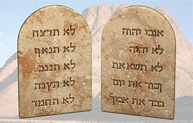

شروع وِچ ۔ ۔ ۔
بائبل دی پہلی کتاب دے ناں، پیدائش، دا مطلب ہے آغاز۔ پیدائش دے پہلے دو ابواب سانوں دادے نیں کہ خدا نے کائنات نوں تخلیق کیتا: ستارے، زمین تے دُوجے سارے سیارے، تے ہر اوہ جاندار جو ہے یا کدھی سی۔ خدا دی سب توں خاص مخلوق انسان سی: لوک۔ لوک خاص نیں کیونکہ اوہ خدا دی اپنی صورت تے بنائے گئے نیں۔ (ویکھو پیدائش 1 باب 26 تا 27 آیات)

آدم تے حوّا
پیدائش دا تِیجا باب اس کہانی نوں بیان کردا ہے کہ گناہ دنیا وچ کینج داخل ہویا۔ آدم تے حوا، پہلا مرد تے پہلی عورت، ایہہ منن دے لئی آمادہ ہوئے کہ خدا نے ایناں نال چُوٹھ بولیا۔ اس چُوٹھ تے یقین کردے ہوئے، ایناں نوں فیر یقین ہو گیا کہ اوہ حقیقت وچ خدا دی طرح ہو سکدے نیں۔ جدوں خُدا نے ویکھیا کہ اوہ نافرمان ہو چکے نیں، آدم تے حوا نے خُدا دے ساتھ اُس کھلے رشتے دا لطف نہیں چُکیا جو اوہناں دا پہلاں سی۔ گناہ نے اوہناں نوں خدا توں وکھ کر دِتا سی۔ تے ایسا ہی ہر شخص دے لئی ہیگا اے، سوائے ایک دے، جو اس وقت توں زندہ ریا ہے: اسی سب گناہ دے ذریعے خُدا توں وکھ ہو گئے آں۔

پیدائش دے ابواب چار تے پانچ بنی نوع انسان دی ودھدی ہوئی بدکاری دی افسوسناک کہانی نوں جاری رکھدے نیں۔ خدا نے ہالی تک سانوں صحیح زندگی گزارن دے لئی اپنے احکام نہیں دِتے ای، تے لوکی اونج ہی سلوک کردے سی جینج اوہ چاہندے سی۔ انسانیت، ساری بُری تہذیب تشدد تے ہر قسم دی بے حیائی تے تلی ہوئی نظر آندی سی۔ اپنی اعلیٰ ترین مخلوق نوں افسوسناک حالت وچ ویکھ کر خدا نوں افسوس ہویا کہ اس نے مخلوقات نوں اس طرح دے سلوک دے قابل بنایا ہے۔

موسیٰ دی موت دی کہانی ڈیوٹرونومی دے ٣٤ویں باب وچ لکھی ہوئی اے۔ ایہ ڈیوٹرونومی دی کتاب وچ اے، جتھے اللہ تعالیٰ نے اپنے لوکاں نوں کوہِ سینا تے دتے ہوئے قنوناں نوں وسیع کیتا اے۔ اوہ بیان کردا اے کہ لوکاں نوں اپنے یہودیاں وچ کیویں چلنا چاہیدا اے تے اوہ اللہ تعالیٰ دی عبادت کیویں کرنی چاہیدی اے۔
نوح
جینج کہ خُدا نے اپنی گنہگار تخلیق دے ول تھلے ویکھیا، اُس نے ایک آدمی نوں پایا جو خُداوند دے نال چلدا سی: نوح۔ خدا نے بنی نوع انسان نوں مٹان تے نوح تے اس دے خاندان دے نال نوے سرے توں آغاز کرن دا فیصلہ کِیتا۔ پیدائش دے باب چھ توں اٹھ تک دسدے نیں کہ کینج خُدا نے سارے بنی نوع انسان نوں سیلاب نال تباہ کیتا، صرف نوح تے اُس دی بیوی تے اوہناں دے تِن پُتر تے اوہناں دی بُڈیاں نوں بچایا۔
پیدائش دے باب نو توں گیارہ تک سانوں ایہہ کہانی فراہم کیتی گئی ہے کہ کینج نوح دے پُتراں شیم، ہام تے یافت دے ذریعہ سیلاب دے بعد زمین نوں آباد کیتا گیا۔ یارویں باب دے آخر وچ، ساڈا تعارف ایک بہت ہی خاص آدمی نال کرایا گیا ہے، ایک ایسا آدمی جنہوں خدا ایک ایسے لوکاں دا باپ آکھے گا جنہوں اوہ اپنا کہہ سکدا ہے۔


ابراہام
پیدائش وچ، بائبل سانوں بہت سے لوکاں دے بارے وچ دسدی ہے جو نوح دی طرح "خدا دے نال چلدے سی"۔ خُدا دے نال چلن دے لئی ایمان دی ضرورت ہوندی ہے: ایک بلاشبہ یقین کہ خُدا اوہی کرے گا جو اوہ کرن دا وعدہ کردا ہے۔ نوح دے لئی ایہہ یقین کرن دے لئی کہ خدا زمین نوں پوری آبادی نوں سیلاب توں تباہ کر دیوے گا تے ایک کشتی (ایک وڈی کشتی) بنان دے لئی خُدا دی ہدایت تے عمل کرن دے لئی، جدوں اس دے آسے پاسے دے لوک کم کردے ہوئے اس دا مذاق اُڈاندے سی، اس دے لئی بہت زیادہ ایمان دی لوڑ سی۔ پیدائش 12 باب وچ، اسی ایک ہور آدمی دے بارے وچ سِکھدے آں جس دے بارے وچ خدا نوں بہت زیادہ ایمان دی توفیق سی: ابراہام۔
خدا نے ابرام توں بہت کُجھ طلب کیتا (بعد وچ خدا نے اس دا ناں بدل کر ابراہام رکھ دِتا): اس نے ابراہام نوں آکھیا کہ اوہ اپنا وطن چھڈ دیوے تے ایسی جگہ چلا جاوے جنہوں اس نے کدھی نہیں ویکھیا سی، جِتھے اوہ کسی نوں نہیں جان دا سی۔ اس دی فرمانبرداری دی وجہ توں، خدا نے ابراہام نال دو وعدے کیتے:
- 1. کہ اوہ کنعان دی سرزمین (جنہوں ہُن اسی اسرائیل کہندے آں) ابراہام تے اس دی اولاد نوں دیوے گا
- 2. کہ ایک عظیم قوم ابراہام دی اولاد توں نکلے گی۔
ابراہام دے ذہن وچ، ایناں دوناں وعدیاں دی وجہ نال ایناں دے نال مسائل ضرور سی۔ کنعان دی سرزمین پہلاں ہی کئی دُوجے لوکاں دی سی، تے ابراہام تے اس دی بیوی دی کوئی اولاد نہیں سی۔ تے ابراہام دی بیوی، سارہ، بچے پیدا کرن دے لئی بہت بُڈی سی۔ فیر وی، ابراہام دا ایمان سی، تے اس لئی اوہ تے اس دے سارے کار والے کنعان دے لئی روانہ ہوئے۔
جے تسی پیدائش دے باب 12 توں 23 وچ ابراہام دی کہانی پڑھدے اوہ، تے تُسی ویکھو گے کہ ابراہام دا ایمان کامل نہیں سی: اس نے کدھی کدھی خدا تے اس دے وقت دا انتظار کرن دی بجائے ’’معاملات نوں اپنے ہتھ وچ لے لیا‘‘۔ فیر وی، اسی پیدائش 15 باب 6 آیت وچ پڑھدے آں، ’’ابرام نے خُداوند تے یقین کیتا، تے اُس نے اُس نوں راستبازی قرار دِتا۔‘‘
ایتھے تک کہ جدوں ایہہ سوکھا نہیں ہے، ایتھے تک کہ جدوں اسی راستہ نہیں ویکھ سکدے آں، خدا ساڈے توں اس تے پروسہ کرن نوں کہندا ہے۔

جینج کہ خدا نے وعدہ کیتا سی، سارہ دے ہاں بیٹا پیدا ہویا۔ اس نے تے ابراہام نے اس دا ناں اسحاق رکھیا۔ سارہ اپنے بڑھاپے وچ وی بچے دی پیدائش تے خوش سی۔
جدوں اسحاق وڈا ہویا تے شادی کیتی تے اس دے دو بیٹے یعقوب تے عیسو سی (پیدائش 25 باب 19 آیت توں پیدائش 30)۔
یعقوب دے بارہ بیٹے سی (تُسی ایناں دے ناواں دی فہرست پیدائش 35 باب 23 توں 26 آیات وچ ویکھ سکدے اوہ)۔ ایناں بیٹیاں دے ناں بنی اسرائیل دے بارہ قبیلیاں دے ناں ہون گے۔ (خدا نے درحقیقت یعقوب دا ناں بدل کر اسرائیل رکھیا—پیدائش 35 باب 10 آیت۔) ایناں بارہ بیٹیاں دے ذریعے، خدا نے ابراہام توں اپنے لوکاں دی ایک عظیم قوم بنان دا وعدہ پورا کیتا۔

موسیٰ
یعقوب دا ایک بیٹا، یوسف، مصر گیا تے فرعون دے دربار وچ ایک وڈا افسر بن گیا (تسی اس دے بارے وچ پیدائش 37 توں 50 وِچ پڑھ سکدے اوہ۔ ایہہ ایک لمی کہانی ہے، لیکن کافی مہم جوئی نال پرپور ہے)۔ بالآخر، یوسف دے سارے گیارہ پائی وی مصر چلے گئے۔ جدوں تک یوسف زندہ سی، ایناں دا خاندان فرعون نال تعلق دی وجہ توں چنگا گزارا کردے رہے۔
یوسف دی موت دے بعد، دوجیاں نسلاں پیدا ہوئیاں، تے ایک نوا فرعون اقتدار وچ آیا جو نہیں جان دا سی کہ یوسف نوں شاہی خاندان نے پسند کیتا سی۔ اس نوے فرعون نے ویکھیا کہ یہودیاں (بنی اسرائیل نوں یہودی یا یہودی قوم وی آکھیا جاندا سی) دی تعداد بہت ودھ گئی ہے۔ اس نے اینوں خوفزدہ کر دِتا کہ کِتے اوہ اس دی حکومت تے غالب نہ آ جان، چنانچہ اس نے مصر وچ سارے بنی اسرائیل (یہودی) نوں غلام بنا لیا۔

خروج 2 باب 23 آیت وچ، بائبل سانوں دسدی ہے کہ بنی اسرائیل نے مصر دے غلاماں دے طور تے بہت تکلیفاں برداشت کیتیاں۔ اوہناں نے اپنی قوم نوں بچان دے لئی خُدا نال فریاد کیتی، تے خُدا نے اوہناں دی سُنی۔ اس نے اسرائیل نوں غلامی توں نجات دلان دے لئی یہودیاں وچوں ایک شخص دا انتخاب کیتا۔ اس آدمی دا ناں موسیٰ سی۔
ابراہام دے برعکس، جس نے خُدا دی پکار تے تیان دِتا، موسیٰ نے سب توں پہلاں کوشش کیتی کہ خُداوند کسی ہور نوں استعمال کرے (خروج 4 باب 1 تا 14 آیات)۔
خُدا نے موسیٰ نوں وکھایا کہ ایہہ خُدا ہووے گا، موسیٰ نہیں، جو دراصل فرعون دے ہتھ نوں یہودی غلاماں نوں آزاد کرن تے مجبور کرے گا۔ موسیٰ صرف خدا دا رسول ہووے گا۔
مصر وچ، اوہ بہت سے دیوتاؤں یعنی بُتاں دی پوجا کردے سی، نہ کہ ابراہام، اسحاق تے یعقوب دے خدا نوں۔ جدوں موسیٰ پہلی واری فرعون دے کول پہنچیا (خروج 5)، فرعون نے طعنہ دِتا: "خداوند کون ہے کہ میں اس دی اطاعت کراں؟"
موسیٰ دُوجی درخواست دے نال فرعون دے کول واپس آیا کہ فرعون یہودی غلاماں نوں رہا کرے۔ تاہم، اس واری، موسیٰ اپنے نال خدا دے ولوں ایک انتباہ لے کر گیا: جے فرعون بنی اسرائیل نوں آزاد کرن تے راضی نہ ہویا، تے خدا مصر تے نو آفتاں دا ایک سلسلہ جاری کر دیوے گا، تباہی، بیماری تے تاریکی دیاں آفتاں۔ حیرت انگیز طور تے ایناں ساریاں آفتاں دے خوفناک اثرات دے بعد وی فرعون نے خدا دی قدرت تے یقین کرن توں انکار کیتا تے یہودیاں نوں آزاد نہیں کیتا۔ (خروج 7 باب 15 آیت - خروج 11)
دسویں آفت یعنی طاعون (خروج 12) دے بعد ہی فرعون بالآخر مصر دے غلاماں نوں آزاد کرن تے راضی ہو گیا۔ مصر دے ہر کار دے پہلوٹھے نوں قتل کر دِتا جاوے گا۔ تاہم، خدا نے یہودیاں دے پہلوٹھے بیٹیاں نوں بچایا۔ اس نے ایناں نوں ہدایت کیتی کہ ایک پیڈ دا بچہ قربان کرن تے اس دے خون نوں اپنے کراں دے بوہیاں تے رنگ دین۔ جدوں خُدا پہلوٹھے بیٹیاں نوں مارن دے لئی آیا، تے اوہ اوہناں ساریاں اسرائیلیاں دے کراں نوں "پار کر دیوے گا" جنہاں نے اپنے بوہیاں تے برّے دے خون نوں لگان دے لئی اُس دی ہدایات تے عمل کیتا سی۔
اج تک، یہودی ہر سال فسح دا تہوار اس معجزے دی یاد وچ مناندے نیں جس نے ایناں نوں غلامی توں آزاد کرن وچ مدد کیتی۔

موسیٰ دی قیادت وِچ یہودیاں نے مصر توں نکلن دا سفر شروع کیتا۔ مصر دے نال جو کُجھ وی خدا دے ہتھ توں ہویا اس دے بعد وی فرعون نے یہودیاں نوں غلامی وچ رکھن دی ایک آخری کوشش کیتی۔
مصری فوج نے اسرائیلاں دا بحیرہ احمر تک پِچھا کیتا، ایہہ سوچ کر کہ اوہناں نے اوہناں نوں پانی وچ پھسایا ہے (خروج 14)۔ بنی اسرائیل کبران لگے لیکن موسیٰ نے ایناں نوں اپنے خدا تے یقین رکھن دی تاکید کیتی۔ خُدا نے موسیٰ نوں حکم دِتا کہ اوہ پانی دے ول اپنی لاٹھی چُکے۔ معجزانہ طور تے، بحیرہ احمر دا پانی وکھ ہو گیا، جس توں خشک زمین دا راستہ بن گیا جس توں اوہ دوجی ول جا سکدے سی۔ جدوں فرعون دے لشکر نے اسی راستے توں لنگن دی کوشش کیتی تے سمندر دا پانی دوناں ولوں توں ڈِگیا تے سب نوں غرق کر دِتا۔ آخر کار، بنی اسرائیل مصر توں نکل کر غلامی توں آزاد ہو گئے۔
نالے، جینج کہ خُدا نے موسیٰ نوں دسیا سی جدوں اُس نے پہلی واری اوہنوں بلایا سی، ایہہ خُدا دا قوی ہتھ سی جس نے ایہہ سب کیتا!
دس حُکم
جینج کہ اسی عظیم سیلاب دی کہانی وچ پڑھدے آں، خدا نے ہالے تک اپنے قوانین مرداں نوان نہیں دِتے سی۔ جدوں یہودی اس سرزمین تے جان لگے جس دا خدا نے ابراہیم تے اس دی اولاد نال وعدہ کیتا سی، تے خدا نے موسیٰ نوں کوہ سینا دی چوٹی تے چڑھن دا حکم دِتا۔ اوتھے، لوکاں نوں خُدا دے زبردست جلال توں بچان دے لئی پہاڑ تویں نال ٹکیا ہویا سی، موسیٰ نے اپنے لوکاں دے لئی خُدا دے احکام حاصل کیتے (خروج 20 باب 1 تا 17 آیات)۔
صرف اس لئی کہ یہودی ہُن مصر دی غلامی وچ نہیں سی، اس دا ایہہ مطلب نہیں سی کہ ایناں دی تمام مُشکلاں ختم ہو چُکیاں نیں۔ اوہناں دے اُس سرزمین تک دے سفر دی کہانی جس دا خدا نے اوہناں نال وعدہ کیتا سی چالیس سال دے عرصے تے محیط ہے!
بنی اسرائیل دا ایمان کمزور سی۔ اوہ اکثر شک کردے سی کہ خدا ایناں دے لئی مہیا کرے گا یا نہیں۔ اوہ بعض اوقات بہت حوصلہ شکن ہو جاندے سی، اوہ دراصل مصر واپس جان دی گل کردے سی! تے، شاید سب توں وڈی گل، اوہناں نے پوجا دے لئی بت وی بنائے کیونکہ اوہ خدا تے بہت شک کردے سی۔

موسیٰ دی موت دی کہانی استثنا دے 34ویں باب وچ درج ہے۔ ایہہ استشنا دی کتاب وچ ہے کہ خُدا اوہناں قوانین تے وسعت دیندا ہے جو اُس نے اپنے لوکاں نوں کوہِ سینا تے دِتے سی۔ اوہ اس گل دا خاکہ پیش کردا ہے کہ لوکاں نوں اپنے ساتھی یہودیاں دے درمیان کینج برتاؤ کرنا سی تے اوہناں نوں خدا دی عبادت کینج کرنی سی۔